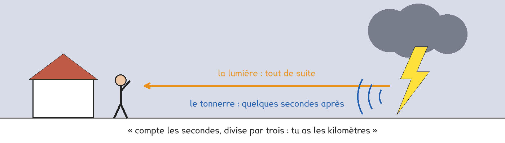
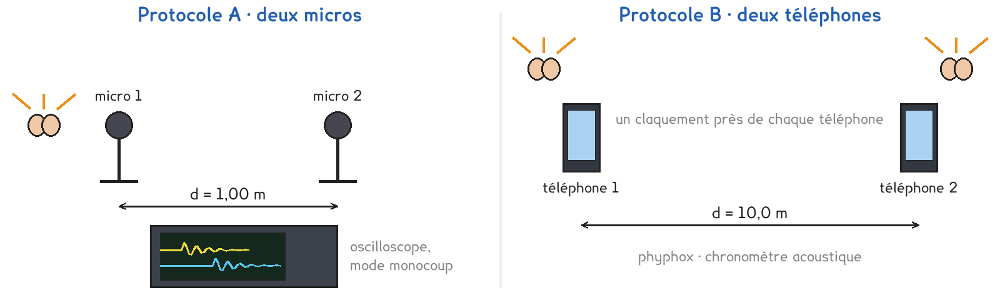

1re ou Tle Bac Pro · toutes spécialités · TP commun CT-12
À quelle vitesse le son se propage-t-il dans l'air ?
2 figures
Sujet. Pendant un orage, on voit l’éclair tout de suite, et le tonnerre arrive quelques secondes plus tard. On dit qu’il suffit de compter les secondes et de diviser par trois pour avoir la distance de l’orage en kilomètres.

Problématique : à quelle vitesse le son se propage-t-il dans l’air ?
a) On compte 6 s entre l’éclair et le tonnerre.
D’après la règle, à quelle distance est l’orage ?
Quelle vitesse du son la règle suppose-t-elle ?
Distance : 6 ÷ 3 = ……… km, soit ……… m.
Vitesse : v = d ÷ t = ……… ÷ ……… = ……… m/s
b) Convertir en secondes. Le premier est fait.
| En millisecondes | 1 ms | 3 ms | 30 ms | 60 ms |
|---|---|---|---|---|
| En secondes | 0,001 s | ……… | ……… | ……… |
Deux protocoles répondent à la même question : une partie de la classe prend A, l’autre prend B, et on compare à la fin.
Protocole A · deux micros. Un claquement passe devant le micro 1, puis devant le micro 2, à 1,00 m. L’oscilloscope, en mode monocoup, enregistre les deux signaux : leur décalage Δt est la durée du trajet sur 1,00 m.
Protocole B · deux téléphones. Chaque téléphone lance un chronomètre au premier claquement et l’arrête au second. Un claquement près de chaque téléphone, à 10,0 m l’un de l’autre : la différence des deux durées affichées vaut deux fois le trajet du son.

c) Compléter le tableau pour comparer les deux protocoles.
| Protocole A | Protocole B | |
|---|---|---|
| La distance parcourue par le son | ……… m | ……… m |
| Ce qu’on lit | …………………………… | …………………………… |
| Une limite | …………………………… | …………………………… |
Le choix se fait maintenant, avant de toucher au matériel.
d) Quel protocole prenez-vous ? Justifier en une phrase.
Le professeur peut vous imposer celui qui reste disponible.
Je prends le protocole ……… parce que ……………………………………………………………………
e) Si la règle de l’orage est juste, quelle durée faut-il au son
pour parcourir 1,00 m ? Et 10,0 m ?
Sur 1,00 m : ……… ms Sur 10,0 m : ……… ms
Avant de commencer
Un claquement se fait bras tendu, loin des oreilles, jamais près de celles d’un voisin.
Pour l’atténuation, la source reste à un volume modéré : moins de 85 dB à 1 m.
f) Schématiser votre montage vu de dessus, avec la distance d.
Le schéma se dessine sur la feuille du TP.
g) Relever vos mesures, puis calculer la vitesse du son pour chaque essai.
| Essai | 1 | 2 | 3 |
|---|---|---|---|
| Distance d (m) | |||
| B · durées t1 et t2 (s) | |||
| Durée du trajet Δt (s), en B : (t1 − t2) ÷ 2 | |||
| Vitesse v = d ÷ Δt (m/s) |
La suite, pour tous · l’atténuation. Une source émet un son continu, le téléphone réglé sur 1 000 Hz. On mesure le niveau sonore à 1, 2 et 4 m, au sonomètre ou avec phyphox.
h) Relever le niveau sonore, puis ce qu’il perd depuis 1 m.
| Distance à la source | 1 m | 2 m | 4 m |
|---|---|---|---|
| Niveau sonore (dB) | |||
| Perte depuis 1 m (dB) | 0 |
i) Calculer la moyenne de vos trois vitesses.
La règle de l’orage est-elle juste ?
j) Comparer avec un groupe de l’autre protocole : même vitesse ?
Pourquoi le protocole B écarte-t-il les téléphones de 10 m, et pas de 1 m ?
k) Que perd le son quand la distance double ? Est-ce toujours la même perte ?
l) Répondre à la problématique en deux phrases.
Ce que ce TP a établi, et qui vaut pour tous les sons :
À RETENIR
Le son se propage dans l’air à environ 340 m/s : un kilomètre en trois secondes. Il lui faut un milieu matériel ; dans l’eau, il va plus vite, environ 1 500 m/s.
Sa vitesse se mesure par une distance et une durée : v = d ÷ Δt.
Le son s’atténue en se propageant : à l’air libre, le niveau perd environ 6 dB chaque fois que la distance double.
TP commun de physique-chimie, toutes spécialités. Le travail se fait sur la feuille du TP : cette page en est la version à l'écran, sans les lignes à remplir. Rien n'est enregistré.